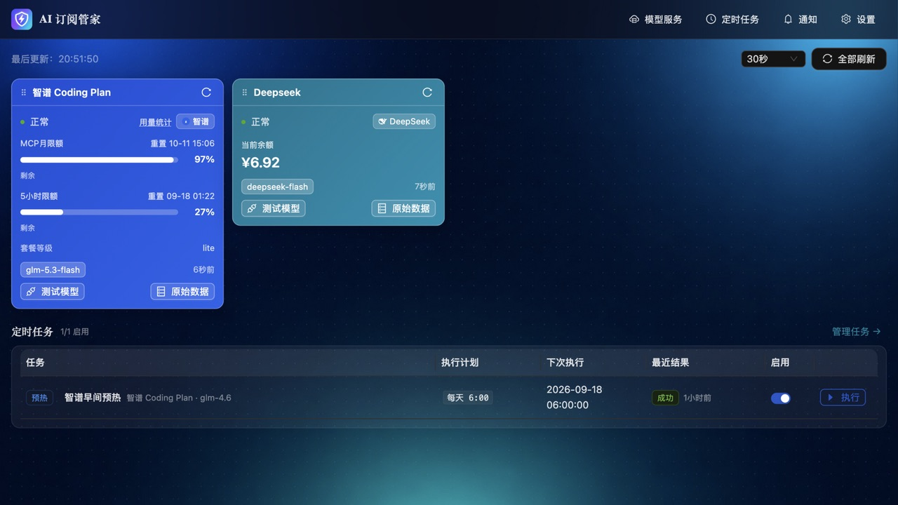
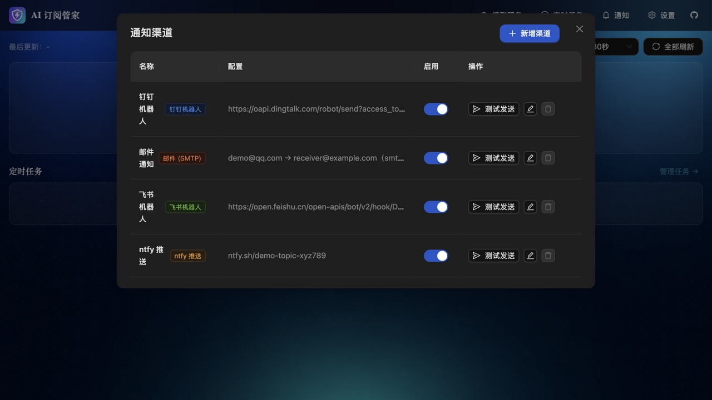
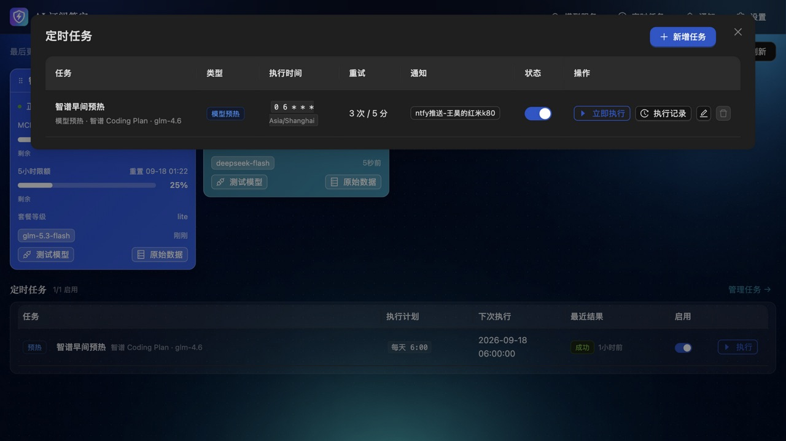
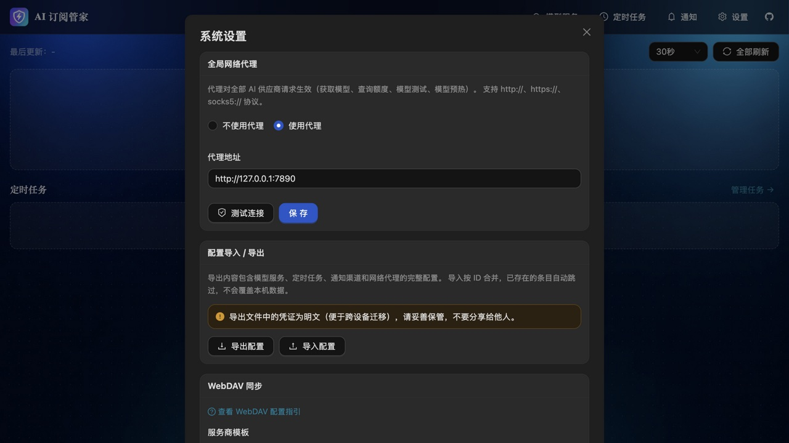

额度监控看板 · 定时预热 · 定时提醒 · 多渠道推送通知
单二进制部署，数据全部本地存储，凭证加密保存

供应商彩色卡片实时展示额度剩余百分比、重置时间、按量余额与套餐等级；自动定时刷新真实查询供应商；卡片拖拽排序。
智谱 / Kimi / Claude / OpenAI / MiniMax / DeepSeek / 百炼 / NewAPI / Sub2API…官方模板只填令牌即可，另支持自定义 OpenAI 兼容端点。
Cron 调度流式模型请求 + 额度自动验证，失败按配置重试；三段式时间选择器（每天 / 每周 / 自定义 Cron）。
到点把固定文案原样推送到选中渠道——"该续费了""检查额度"不再遗忘。
钉钉 / 飞书 / 企微 / Telegram / ntfy / Bark / Gotify / 邮件 / Webhook，单任务可多选并行推送，互不影响。
SQLite 本地存储，凭证 AES-256-GCM 加密；配置一键导出 / 导入、WebDAV 云端备份（坚果云模板）；版本检查与一键自升级。



任务结果、定时提醒可同时推送到多个渠道，单渠道失败不影响其他渠道
# 下载对应平台压缩包，解压即用
./keeper
# 打开 http://localhost:8080darwin / linux / windows · amd64 / arm64，前端已内嵌，零依赖。
docker compose up -d
# 打开 http://localhost:8080数据持久化在 volume，配置经环境变量注入。
make build # 前端编译 → 嵌入 → go build
./bin/keeper需要 Go 1.25+ 与 Node.js 20+。